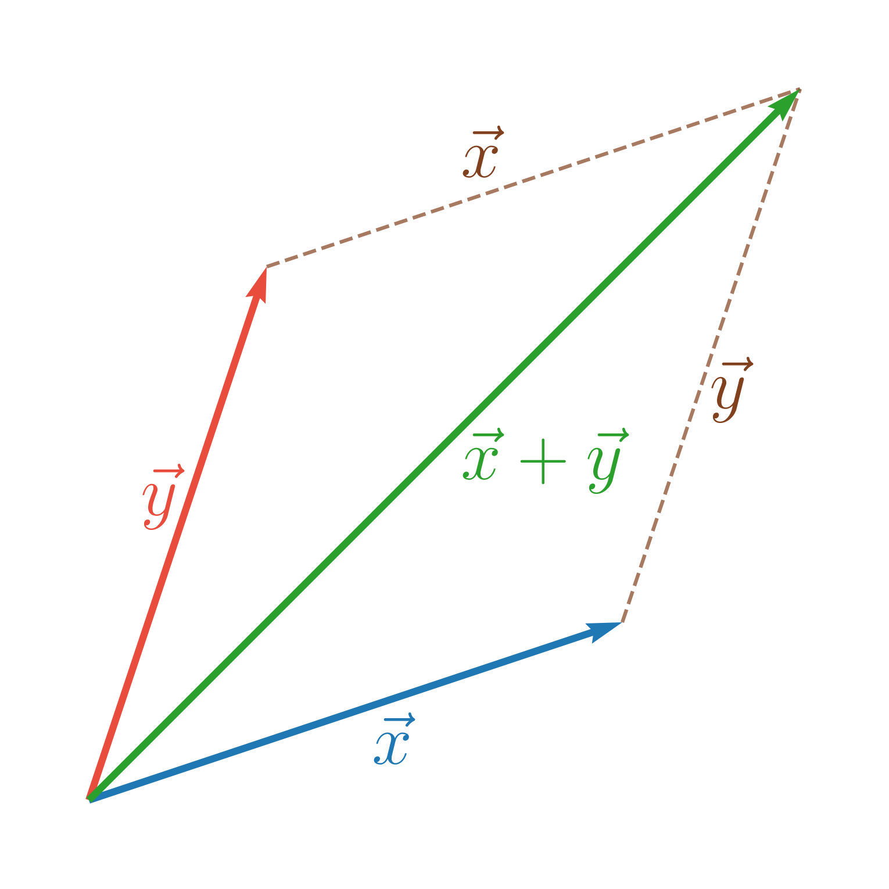
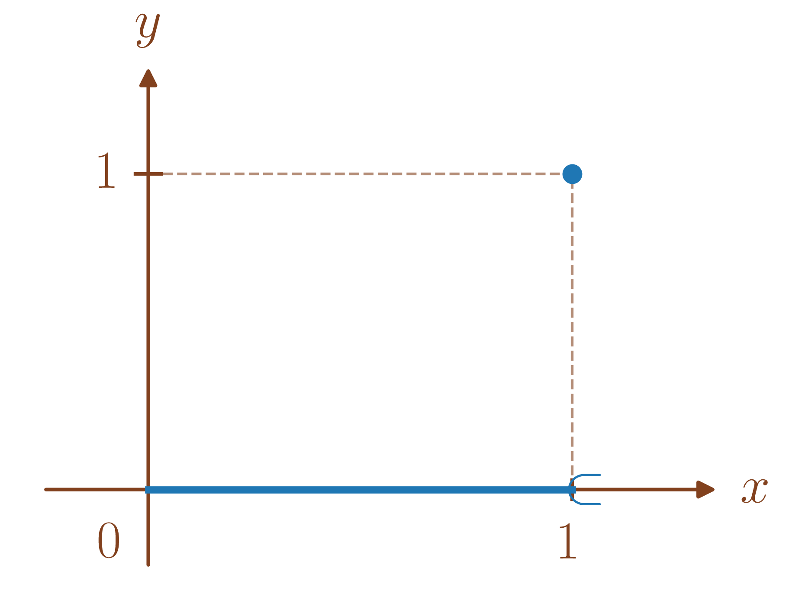
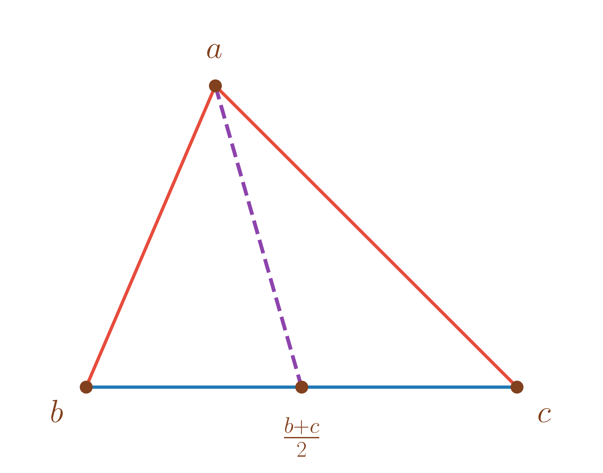
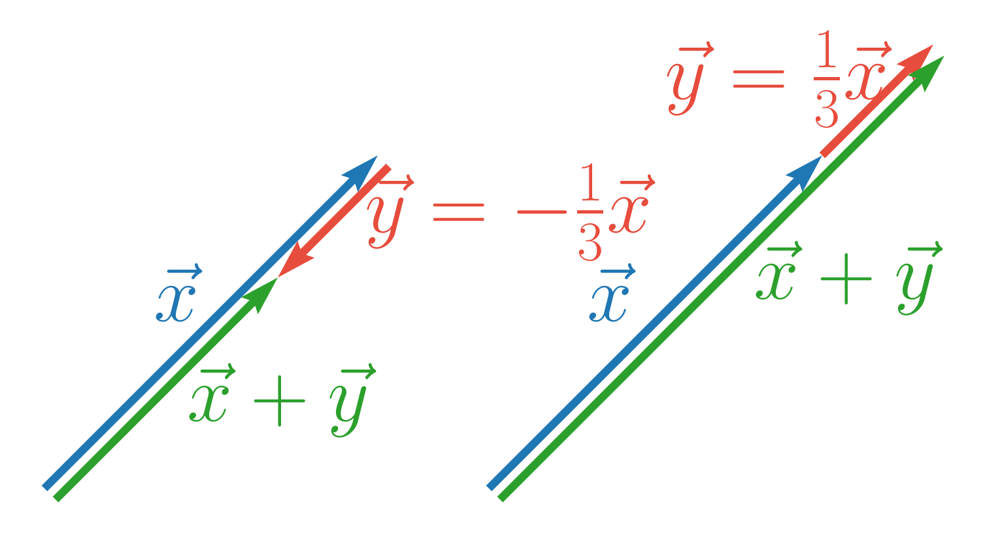
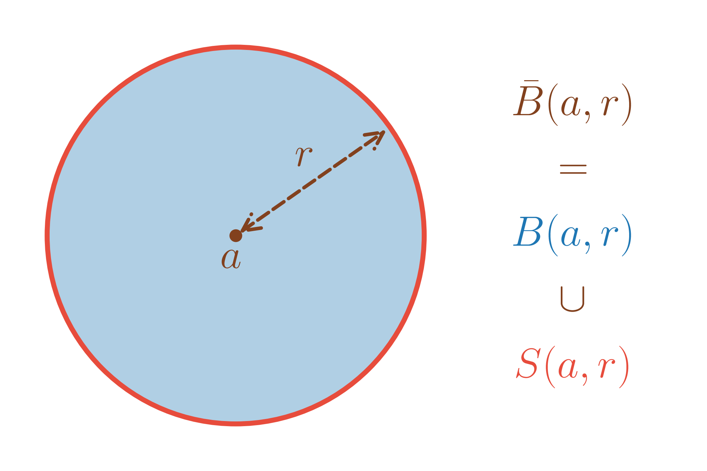

Dans tout le cours, \(\mathbb{K}=\mathbb{R}\text{ ou }\mathbb{C}\).
Soit \(E\) un ensemble non vide. On appelle distance sur \(E\), toute application \(\begin{array}{lllll} d & : & E\times E & \to & \mathbb{R}^{+} \\ & & (x,y) & \mapsto & d(x,y) \end{array}\) qui vérifie
(Symétrie) \(\forall x,y \in E, d(x,y) = d(y,x)\)
\(\forall x,y \in E\), \(d(x,y) = 0 \iff x=y\)
(Inégalité triangulaire) \(\forall x,y,z \in E, d(x,y) \leq d(x,z)+d(y,z)\).
\((E,d)\) est alors appelé un espace métrique.
Pour la distance euclidienne usuelle du plan, l’inégalité triangulaire s’interprète comme "la ligne droite est le chemin le plus rapide".

Pour \(E = \mathbb{C}\), \((x,y) \in E \mapsto \left|x-y\right|\) est une distance.
Pour \(E\) un ensemble quelconque, \(d(x,y) \in E \mapsto \left\{\begin{array}{ll} 1 & \mbox{ si $x \neq y$} \\ 0 & \mbox{ si $x=y$} \end{array}\right..\)
Si \(E = E_1 \times E_2 \times \ldots \times E_n\), \(d: (x,y) \in E \mapsto \mathop{\mathrm{card}}\left\{i / x_i \neq y_i\right\}\) est une distance sur \(E\).
D’abord, \(d\) est bien à distance dans \(\mathbb{R}^{+}\). Puis, soient \(x,y,z \in E\),
On a clairement \(d(x,y) = d(y,x)\).
On a aussi clairement \(d(x,y) = 0 \iff x=y\).
Soit \(1 \leq i \leq n\) tel que \(x_i\neq y_i\) alors nécessairement \(x_i\neq z_i\) ou \(y_i\neq z_i\). Ainsi, \(\left\{i\mid x_i\neq y_i\right\}\subset\left\{i\mid x_i\neq z_i\right\}\cup\left\{i\mid y_i\neq z_i\right\}\). Par conséquent, \[d(x,y) \leq \mathop{\mathrm{card}}\left\{i\mid x_i\neq z_i\right\} +\mathop{\mathrm{card}}\left\{i\mid y_i\neq z_i\right\} =d(x,z)+d(z,y).\] Donc \(d\) vérifie l’inégalité triangulaire.
Soient \(x_1,\ldots,x_n \in E\), \(d(x_1,x_n) \leq \sum_{j=1}^{n-1}d(x_j,x_{j+1})\).
Soit \(A \subset E\) et \(\begin{array}{lllll} d_A & : & A\times A & \to & \mathbb{R}^{+} \\ & & (x,y) & \mapsto & d(x,y) \end{array}\) est une distance sur \(A\) et \((A,d_A)\) est un espace métrique.
Soient \((E,d)\) un espace métrique et \(x,y,z \in E\) alors \[d(x,y) \geq \left|d(x,z)-d(y,z)\right|.\]
Par inégalité triangulaire, on a \(d(x,z) \leq d(x,y)+d(y,z)\) donc \(d(x,y) \geq d(x,z)-d(y,z)\).
De même, \(d(y,z) \leq d(y,x)+d(x,z) = d(x,y)+d(x,z)\) donc \(d(x,y) \geq d(y,z)-d(x,z)\).
Donc \(d(x,y) \geq \left|d(x,z)-d(y,z)\right|.\)
Soit \((E+,.)\) un \(\mathbb{K}\)-espace vectoriel. On appelle norme sur \(E\), toute application \(\begin{array}{lllll} \left\|\cdot\right\| & : & E & \to & \mathbb{R}^{+} \\ & & x & \mapsto & \left\|x\right\| \end{array}\) qui vérifie
(Définie positive) \(\forall x \in E, \left\|x\right\| = 0 \Longrightarrow x=0_E\),
(Homogénéité) \(\forall x \in E, \lambda\in \mathbb{K}, \left\|\lambda x\right\| = \left|\lambda\right|\left\|x\right\|\),
(Inégalité triangulaire) \(\forall x,y \in E, \left\|x+y\right\| \leq \left\|x\right\|+\left\|y\right\|\).
Alors, \((E,\left\|\cdot\right\|)\) est appelé un espace vectoriel normé.
Sur \(E = \mathbb{R}\text{ ou }\mathbb{C}\), \(N(x) = \left|x\right|\) est une norme.
Pour les vecteurs du plan muni de la norme euclidienne usuelle, l’inégalité triangulaire s’interprète encore de la même façon. On l’lillustre ici pour deux vecteurs \(\overrightarrow{u},\overrightarrow{v}\).

Par le 1. et le 2., on a \(\left\|x\right\| = 0 \iff x=0_E\) donc \(\left\|x\right\| > 0 \iff x \neq 0_E\).
Si \(x \neq 0\), par le 2., \(v = \pm\frac{1}{\left\|x\right\|}.x\) est de norme \(1\). On dit alors que \(v\) est un vecteur unitaire ou normé.
Soit \(F\) un sous-espace vectoriel de \(E\) alors \(\begin{array}{lllll} \left\|\cdot\right\|_F & : & F & \to & \mathbb{R}^{+} \\ & & x & \mapsto & \left\|x\right\| \end{array}\) est une norme sur \(F\) et \((F,\left\|\cdot\right\|_F)\) est un espace normé.
Si \(\left\|\cdot\right\|\) ne vérifie que les 2. et 3., on dit que c’est une semi-norme.
\(\left\|\cdot\right\|\) est une fonction convexe sur \(E\) car pour tout \(x,y \in E\), \(\left\|(1-\lambda)x+\lambda y\right\| \underbrace{\leq}_{\substack{\text{par inégalité} \\ \text{triangulaire}}} \left\|(1-\lambda)x\right\|+\left\|\lambda y\right\| \underbrace{=}_{\text{par homogénéité}} \underbrace{(1-\lambda)}_{\geq 0}\left\|x\right\|+\underbrace{\lambda}_{\geq 0}\left\|y\right\|.\)
Soit \((E,\left\|\cdot\right\|)\) un \(\mathbb{K}\)-espace vectoriel normé.
Alors, \(\begin{array}{lllll} d & : & E\times E & \to & \mathbb{R}^{+} \\ & & (x,y) & \mapsto & \left\|x-y\right\| \end{array}\) est une distance sur \(E\) qui est appelée la distance associée à \(\left\|\cdot\right\|\).
\(d\) est effectivement à valeurs dans \(\mathbb{R}^{+}\). De plus, soient \(x,y,z \in E\),
\(d(x,y) = \left\|x-y\right\| = \left\|(-1)(y-x)\right\|=\left|-1\right|\left\|y-x\right\|=\left\|y-x\right\|=d(y,x)\),
\(d(x,y)=0 \iff \left\|x-y\right\|=0 \iff x-y=0_E \iff x=y\),
\(d(x,y) = \left\|x-y\right\| = \left\|x-z+z-y\right\| \leq \left\|x-z\right\|+\left\|z-y\right\| = d(x,z)+d(z,y)\).
Soit \((E,\left\|\cdot\right\|)\) un \(\mathbb{K}\)-espace vectoriel normé et \(d\) la distance associée à \(\left\|\cdot\right\|\). Alors, pour tout \(x,y,v \in E\) et \(\lambda \in \mathbb{K}\),
\(d(x,0_E) = \left\|x\right\|\),
\(d(x+v,y+v) = d(x,y)\),
\(d(\lambda x, \lambda y) = \left|\lambda\right| d(x,y)\).
\(d(x,0) = \left\|x-0_E\right\|= \left\|x\right\|\),
\(d(x+v,y+v) = \left\|x+v-(y+v)\right\|=\left\|x-y\right\|=d(x,y)\),
\(d(\lambda x, \lambda y) = \left\|\lambda(x-y)\right\| = \left|\lambda\right|\left\|x-y\right\|=\left|\lambda\right| d(x,y)\).
Soit \((E,\left\|\cdot\right\|)\) un \(\mathbb{K}\)-espace vectoriel normé. Soient \(x,y \in E\) alors \[\left\|x-y\right\| \geq \left|\left\|x\right\|-\left\|y\right\|\right|.\]
Par l’inégalité triangulaire, \(\left\|x\right\| = \left\|x-y+y\right\|\leq \left\|x-y\right\|+\left\|y\right\|\) donc \(\left\|x-y\right\| \geq \left\|y\right\|-\left\|x\right\|\). De même, \(\left\|y\right\| = \left\|y-x+x\right\|\leq \left\|y-x\right\|+\left\|x\right\| = \left\|x-y\right\|+\left\|x\right\|\) donc \(\left\|x-y\right\| \geq \left\|y\right\|-\left\|x\right\|\).
On a donc \(\left\|x-y\right\| \geq \pm\left(\left\|y\right\|-\left\|x\right\|\right)\) donc \(\left\|x-y\right\| \geq \left|\left\|x\right\|-\left\|y\right\|\right|.\)
On a donc aussi \(\left\|x+y\right\| \geq \left|\left\|x\right\|-\left\|y\right\|\right|\).
Soient \(x,y \in E\) tels que \(\left\|x\right\| = 2\) et \(\left\|y\right\| \leq \frac{1}{2}\), que peut-on dire de \(\left\|x+y\right\|\) ?
Par l’inégalité triangulaire, \(\left\|x+y\right\| \leq \left\|x\right\|+\left\|y\right\| \leq 2+\frac{1}{2} = \frac{5}{2}\).
D’autre par, par la proposition [prop:inegalite_triangulaire_inverse] (et la remarque [rem:prop:inegalite_triangulaire_inverse]), on a \(\left\|x+y\right\| \geq \left\|x\right\|-\left\|y\right\| \geq 2-\frac{1}{2}=\frac{3}{2}\).
Donc \(\frac{3}{2} \leq \left\|x+y\right\| \leq \frac{5}{2}\).
Sur \(E = \mathbb{K}^n\), en posant \(\left\|\cdot\right\|_1\) tel que \(\left\|x\right\|_1= \sum_{j=1}^n \left|x_j\right|\) pour \(x = (x_1,\ldots,x_n) \in \mathbb{K}^n\), constitue une norme sur \(E\).
\(\left\|\cdot\right\|_1\) est à valeurs dans \(\mathbb{R}^{+}\). De plus, pour \(x,y \in \mathbb{K}^n\),
\(\left\|x\right\|_1= \sum_{j=1}^n \left|x_j\right| = 0 \Longrightarrow \forall 1 \leq j \leq n, \left|x_j\right| = 0\) car tous les termes sont positifs.
Cela implique donc \(x_j = 0\) pour \(1 \leq j \leq n\) et \(x=0\).
Soit \(\lambda \in \mathbb{K}\), \(\left\|\lambda x\right\|_1 = \sum_{j=1}^n \left|\lambda x_j\right| = \sum_{j=1}^n \left|\lambda\right|\left|x_j\right| = \left|\lambda\right|\sum_{j=1}^n \left|x_j\right| = \left|\lambda\right|\left\|x\right\|_1\).
\(\left\|x+y\right\|_1= \sum_{j=1}^n \left|x_j+y_j\right| \underbrace{\leq}_{\substack{\text{par l'inégalité }\\\text{triangulaire}\\\text{ dans $\mathbb{C}$}}} \sum_{j=1}^n \left|x_j\right|+\left|y_j\right|= \sum_{j=1}^n \left|x_j\right|+\sum_{j=1}^n \left|y_j\right| = \left\|x\right\|_1+\left\|y\right\|_1\).
Sur \(E = \mathbb{K}^n\), en posant \(\left\|\cdot\right\|_\infty\) tel que \(\left\|x\right\|_\infty= \max_{1\leq j \leq n}\left|x_j\right|\) pour \(x = (x_1,\ldots,x_n) \in \mathbb{K}^n\), constitue une norme sur \(E\).
\(\left\|\cdot\right\|_\infty\) est à valeurs dans \(\mathbb{R}^{+}\). De plus, pour \(x,y \in \mathbb{K}^n\),
\(\left\|x\right\|_\infty= \max_{1 \leq j \leq n} \left|x_j\right| = 0 \Longrightarrow \forall 1 \leq j \leq n, \left|x_j\right| \leq 0\) donc \(x_j = 0\) pour \(1 \leq j \leq n\) et \(x=0\).
Soit \(\lambda \in \mathbb{K}\), \(\left\|\lambda x\right\|_\infty = \max_{1 \leq j \leq n} \left|\lambda x_j\right| = \max_{1 \leq j \leq n} \left|\lambda\right|\left|x_j\right| \underbrace{=}_{\substack{\text{car}\\ \left|\lambda\right|\geq 0}} \left|\lambda\right|\max_{1 \leq j \leq n} \left|x_j\right| = \left|\lambda\right|\left\|x\right\|_\infty\).
Soit \(1 \leq i \leq n\), \(\left|x_i+y_i\right| \leq \left|x_i\right|+\left|y_i\right| \leq \max_{1 \leq j \leq n} \left|x_j\right|+\max_{1 \leq j \leq n} \left|y_j\right| = \left\|x\right\|_\infty+\left\|y\right\|_\infty\).
Donc \(\left\|x+y\right\|_\infty= \max_{1\leq i \leq n}\left|x_i+y_i\right| \leq \left\|x\right\|_\infty+\left\|y\right\|_\infty\).
Soit \(E\) un \(\mathbb{K}\)-espace vectoriel et \(\mathscr{B}= (e_i)_{i \in I}\) une base de \(E\) avec \(I\) fini ou non. Alors, en posant \(\left\|x\right\|_{1,\mathscr{B}} = \sum_{j\in I} \left|x_j\right|\) et \(\left\|x\right\|_{\infty,\mathscr{B}} = \max_{j\in I}\left|x_j\right|\) pour \(x \in E\) tel que \(x = \sum_{j\in I}x_je_j\), on a \(\left\|\cdot\right\|_{1,\mathscr{B}}\) et \(\left\|\cdot\right\|_{\infty,\mathscr{B}}\) qui sont des normes sur \(E\).
Par exemple, dans \(\mathscr{M}_{n}(\mathbb{K})\), on peut poser pour \(A = \left(a_{ij}\right) \in \mathscr{M}_{n}(\mathbb{K})\), \(\left\|A\right\|_1 = \sum_{1 \leq i,j \leq n} \left|a_{ij}\right|\) et \(\left\|A\right\|_\infty = \max_{1 \leq i,j \leq n} \left|a_{ij}\right|\).
Dans \(P \in \mathbb{K}[X]\), pour \(P= \sum_{n \geq 0} a_n X^n\), on peut poser \(\left\|P\right\|_1 = \sum_{i \geq 0} \left|a_{i}\right|\) et \(\left\|P\right\|_\infty = \max_{i \geq 0} \left|a_{i}\right|\).
Soient \(a,b \in \mathbb{R}\) tels que \(a<b\) et \(E = \mathscr{C}([a,b],\mathbb{R})\). En posant \(\left\|\cdot\right\|_1\) tel que \(\left\|f\right\|_1 = \int_a^b \left|f\right|\) pour \(f \in E\), \(\left\|\cdot\right\|_1\) est une norme sur \(E\).
\(\left\|\cdot\right\|_1\) est à valeurs dans \(\mathbb{R}^{+}\). Ensuite, soient \(f,g \in \mathscr{C}([a,b],\mathbb{R})\),
\(\left\|f\right\|_1 = 0 \Longrightarrow \int_a^b \left|f\right|=0\). Or, \(\left|f\right|\) est une fonction positive et continue donc \(\left|f\right| = 0\) et \(f = 0\).
Soit \(\lambda \in \mathbb{R}\), \(\left\|\lambda f\right\|_1 = \int_a^b \left|\lambda f\right| = \left|\lambda\right|\int_a^b \left|f\right| = \left|\lambda\right|\left\|f\right\|_1\).
Pour tout \(x \in [a,b]\), \(\left|f(x)+g(x)\right| \leq \left|f(x)\right|+\left|g(x)\right|\) donc \(\left\|f+g\right\|_1\leq \left\|f\right\|_1+\left\|g\right\|_1\).
Sur \(\mathscr{C}_{\mathrm{m}}\left([a,b]\right)\), \(\left\|\cdot\right\|_1\) n’est pas une norme mais une semi-norme.
Soient \(a,b \in \mathbb{R}\) tels que \(a<b\) et \(E = \mathscr{C}([a,b],\mathbb{R})\). En posant \(\left\|\cdot\right\|_\infty\) tel que \(\left\|f\right\|_\infty = \sup_{x \in [a,b]}\left|f(x)\right|\) pour \(f \in E\), \(\left\|\cdot\right\|_\infty\) est une norme sur \(E\).
D’abord, \(\left\|\cdot\right\|_\infty\) est bien définie car toute fonction de \(\mathscr{C}([a,b],\mathbb{R})\) est bornée, comme fonction continue sur un segment. On a même \(\left\|f\right\|_\infty = \max_{x \in [a,b]}\left|f(x)\right|\). Ensuite, soient \(f,g \in \mathscr{C}([a,b],\mathbb{R})\),
\(\left\|f\right\|_\infty = 0 \Longrightarrow \sup_{x \in [a,b]}f(x)=0\). Donc pour tout \(x \in [a,b], \left|f(x)\right| \leq 0\) et \(\left|f\right| = 0\) et \(f=0\).
Soit \(\lambda \in \mathbb{R}\),
\(\left\|\lambda f\right\|_\infty = \sup_{x \in [a,b]}\left|\lambda f(x)\right| =\sup_{x \in [a,b]}\left|\lambda\right|\left|f(x)\right| \underbrace{=}_{\text{car $\left|\lambda\right|\geq 0$}} \left|\lambda\right|\sup_{x \in [a,b]}\left|f(x)\right|= \left|\lambda\right|\left\|f\right\|_\infty\).
Pour tout \(x \in [a,b]\), \(\left|f(x)+g(x)\right| \leq \left|f(x)\right|+\left|g(x)\right| \leq \left\|f\right\|_\infty+\left\|g\right\|_\infty\)
donc \(\left\|f+g\right\|_\infty=\sup_{x\in [a,b]}\left|f(x)+g(x)\right|\leq \left\|f\right\|_\infty+\left\|g\right\|_\infty\).
Sur \(\mathscr{C}_{\mathrm{m}}\left([a,b]\right)\), \(\left\|\cdot\right\|_\infty\) est aussi une norme mais pas sur \(\mathscr{C}(]a,b[,\mathbb{R})\).
Les rappels sont relatifs au cours sur les espaces euclidiens de première année.
Soit \(E\) un \(\mathbb{R}\)-espace vectoriel et \(\varphi : E\times E \to \mathbb{R}\).
\(\varphi\) est un produit scalaire sur \(E\) si
\(\varphi\) est bilinéaire ie \(\varphi\) est linéaire par rapport à chacune des variables, ou encore pour tout \(u,v \in E\), \(\begin{array}{lllll} \varphi_1 & : & E & \to & \mathbb{R} \\ & & x & \mapsto & \varphi(x,v) \end{array}\) est linéaire (linéarité à gauche) et \(\begin{array}{lllll} \varphi_2 & : & E & \to & \mathbb{R} \\ & & y & \mapsto & \varphi(u,y) \end{array}\) est linéaire (linéarité à droite).
\(\varphi\) est symétrique ie pour tout \(u,v \in E\), \(\varphi(u,v) = \varphi(v,u)\)
\(\varphi\) est définie positive ie pour tout \(v \in E\), \(\varphi(v,v) \geq 0\) (\(\varphi\) est positive) et \(\varphi(v,v) = 0 \iff v = 0_E\) (\(\varphi\) est définie positive).
\(\varphi(u,v)\) est alors généralement noté \(\langle u,v \rangle\), \(\left(u \mid v\right)\) ou \(\left[u,v\right]\).
Sur \(\mathbb{R}^n\), \(x = (x_1,\ldots,x_n)\) et \(y=(y_1,\ldots,y_n)\), le produit scalaire usuel est \(\langle x,y \rangle = \sum_{i=1}^n x_iy_i\). En notant \(X = \begin{pmatrix} x_1 \\ x_2 \\ \vdots \\ x_n \end{pmatrix},Y = \begin{pmatrix} y_1 \\ y_2 \\ \vdots \\ y_n \end{pmatrix} \in \mathscr{M}_{n,1}(\mathbb{R})\), on a \(\langle x,y \rangle = {}^tXY = ^{t}YX\).
Soit \(E\) un \(\mathbb{R}\)-espace vectoriel et \(\left(e_i\right)_{i\in I}\) une base de \(E\) (avec \(I\) fini ou non) alors on a le produit scalaire \(\langle \cdot,\cdot \rangle\) tel que \(\langle x,y\rangle = \sum_{i \in I} x_i y_i\) pour \(x = \sum_{i \in I} x_i e_i \in E\) et \(y = \sum_{i \in I} y_i e_i \in E\).
Sur \(E = \mathbb{R}[X]\), on a \(\langle P,Q \rangle= \sum_{n \geq 0} a_n b_n\) pour \(P = \sum_{n\geq 0} a_n X^n\) et \(Q = \sum_{n\geq 0} b_n X^n\).
Sur \(E =\mathscr{M}_{n}(\mathbb{R})\), on a \(\langle A,B \rangle = \sum_{1 \leq i,j \leq n}a_{ij}b_{ij} = \mathop{\mathrm{Tr}}({}^t AB)\) pour \(A = \left(a_{ij}\right), B = \left(b_{ij}\right) \in \mathscr{M}_{n}(\mathbb{R})\).
Sur \(\mathscr{C}([a,b],\mathbb{R})\), on a le produit scalaire \(\langle \cdot,\cdot \rangle\) tel que \(\langle f,g\rangle = \int_a^b fg\) pour \(f,g \in \mathscr{C}([a,b],\mathbb{R})\).
En revanche, \(\langle \cdot,\cdot \rangle\) est bien bilinéaire symétrique positive mais pas définie positive sur \(\mathscr{C}_{\mathrm{m}}\left([a,b]\right)\). La fonction \(f\) représentée ci-contre est continue par morceaux sur \([0,1]\) et vérifie \(\int_0^1 f^2=\int_0^1 f = 0\) sans qu’on ait \(f = 0\).

(Inégalité de Cauchy-Schwarz) Soit \(E\) un \(\mathbb{R}\)-espace vectoriel et \(\varphi: E\times E \to \mathbb{R}\) une fonction bilinéaire symétrique et positive (pas forcément définie positive).
Soient \(u,v \in E\) alors \[\left|\varphi(u,v)\right| \leq \sqrt{\varphi(u,u)}\sqrt{\varphi(v,v)}.\] De plus, il y a égalité dans l’inégalité si \((u,v)\) est liée. Si de plus, \(\varphi\) est définie positive, il y a égalité dans l’inégalité si et seulement \((u,v)\) est liée.
Soit \(t \in \mathbb{R}\) alors, par bilinéarité et symétrie de \(\varphi\), \(\varphi(u+tv,u+tv) = \varphi(u,u)+t^2\varphi(v,v)+2t\varphi(u,v)\) et pour \(\left\|u+tv\right\|^2 \geq 0\) et \(t \in \mathbb{R}\mapsto \varphi(u,u)+t^2\varphi(v,v)+2t\varphi(u,v)\) est donc un polynôme toujours positif.
Soit \(\sqrt{\varphi(v,v)} = 0\) et dans ce cas ce polynôme est une fonction affine toujours positive donc on a aussi \(\varphi(u,v) = 0\) donc \(0=\left|\varphi(u,v)\right| \leq \sqrt{\varphi(u,u)}\sqrt{\varphi(v,v)} = 0\).
Soit \(\sqrt{\varphi(v,v)} \neq 0\) et dans ce cas, \(t \in \mathbb{R}\mapsto \varphi(u,u)+t^2\varphi(v,v)+2t\varphi(u,v)\) est un polynôme du second degré avec au plus une racine.
Son discriminant est alors négatif, ce qui donne
\(4\varphi(u,v)^2-4\varphi(u,u)\varphi(v,v) \leq 0 \iff \varphi(u,v)^2 \leq \varphi(u,u)\varphi(v,v) \iff \left|\varphi(u,v)\right| \leq \sqrt{\varphi(u,u)}\sqrt{\varphi(v,v)}\).
Traitons le cas d’égalité.
\((\Longleftarrow)\) Si \((u,v)\) est liée, alors
soit \(v=0_E\) et \(\left|\varphi(u,v)\right| =\sqrt{\varphi(u,u)}\sqrt{\varphi(v,v)}=0\),
soit \(v \neq 0_E\) et il existe \(\lambda \in \mathbb{R}\) tel que \(u = \lambda v\).
On a alors \(\left|\varphi(u,v)\right| = \left|\varphi(\lambda v, v)\right| = \left|\lambda\varphi\left(v, v\right)\right| = \left|\lambda\right|\varphi(v,v)= \sqrt{\varphi\left(\lambda v,\lambda v\right)}\sqrt{\varphi(v,v)} =\sqrt{\varphi(u,u)}\sqrt{\varphi(v,v)}\).
\((\Longrightarrow)\) En cas d’égalité de l’inégalité de Cauchy-Schwarz,
soit \(v=0_E\) et \(\left|\varphi(u,v)\right| =\sqrt{\varphi(u,u)}\sqrt{\varphi(v,v)}=0\),
soit \(v \neq 0_E\) et en reprenant la preuve de l’inégalité de Cauchy-Schwarz, le polynôme \(t \in \mathbb{R}\mapsto \left\|u+tv\right\|^2= \varphi(u,u)+t^2\varphi(v,v)+2t\varphi(u,v)\) du second degré admet le discriminant \(4\varphi(u,v)^2-4\varphi(u,u)\varphi(v,v) =0\).
Il admet donc une racine \(t_0 \in \mathbb{R}\) tel que \(\varphi\left(u+t_0v,u+t_0v\right) = 0\). Comme \(\varphi\) est définie positive, on a \(u+t_0v = 0_E \iff u=-t_0v\) donc \((u,v)\) est liée.
Pour \(f,g \in \mathscr{C}_{\mathrm{m}}\left([a,b]\right)\), on a \(\left|\int_a^b fg\right| \leq \sqrt{\int_a^b f^2}\sqrt{\int_a^b g^2}\). Si de plus, \(f\) et \(g\) sont continues, on a égalité si et seulement si \((f,g)\) est liée.
Soit \((x_1,\ldots,x_n) \in \mathbb{R}^n\), en appliquant l’inégalité de Cauchy-Schwarz avec \(y = (1,\ldots,1)\), on a \[\left|\sum_{i=1}^n x_i\right| \leq \sqrt{\sum_{i=1}^n x_i^2}\sqrt{n}\] avec égalité si et seulement si \(x_1=\ldots=x_n\).
Soit \(E\) un \(\mathbb{R}\)-espace vectoriel, muni d’un produit scalaire \(\langle \cdot, \cdot \rangle\), on pose \(\left\|x\right\|_2 = \sqrt{\langle x,x\rangle}\) pour \(x \in E\). Alors, \(\left\|\cdot\right\|_2\) est une norme dite associée au produit scalaire \(\langle \cdot, \cdot \rangle\) et est appelée préhilbertienne. \(\left(E,\langle \cdot, \cdot \rangle\right)\) est appelé un espace préhilbertien et s’il est de plus de dimension finie, il est appelée espace euclidien.
\(\left\|\cdot\right\|_2\) est à valeurs dans \(\mathbb{R}^{+}\). De plus, soient \(x,y \in E\),
\(\left\|x\right\|_2 = 0 \iff \langle x,x \rangle = 0 \iff x=0\),
Soit \(\lambda \in \mathbb{R}\), \(\left\|\lambda x\right\|_2 = \sqrt{\langle \lambda x, \lambda x \rangle} = \sqrt{\lambda^2 \langle x,x \rangle} = \left|\lambda\right|\left\|x\right\|_2\),
\[\begin{aligned} \left\|x+y\right\|_2^2 & = \langle x+y,x+y \rangle \\ & = \langle x,x \rangle+ \langle x,y \rangle +\langle y,x \rangle +\langle y,y \rangle \text{ par bilinéarité du produit scalaire}\\ & = \langle x,x \rangle+\langle y,y \rangle+ 2\langle x,y \rangle \text{ par symétrie du produit scalaire}\\ & = \left\|x\right\|_2^2+\left\|y\right\|_2^2+2\langle x,y \rangle \\ & \leq \left\|x\right\|_2^2+\left\|y\right\|_2^2+2\left|\langle x,y \rangle\right| \\ & \leq \left\|x\right\|_2^2+\left\|y\right\|_2^2+2\left\|x\right\|\left\|y\right\|\text{ par inégalité de Cauchy-Schwarz} \\ & = \left(\left\|x\right\|_2+\left\|y\right\|_2\right)^2. \end{aligned}\]
Donc \(\left\|x+y\right\|_2 \leq \left\|x\right\|_2+\left\|y\right\|_2\).
Si on remplace \(\langle \cdot, \cdot \rangle\) par une fonction bilinéaire, symétrique, positive mais pas définie positive, on obtient une semi-norme.
Soit \(\left(E,\langle \cdot, \cdot \rangle\right)\) un espace préhilbertien et \(\left\|\cdot\right\|_2\) la norme préhilbertienne associée,
Alors, soient \(x,y \in E\),
\[\begin{aligned} \left\|x+y\right\|_2^2 & =\left\|x\right\|_2^2+\left\|y\right\|_2^2+2\langle x,y \rangle\\ \left\|x-y\right\|_2^2 & =\left\|x\right\|_2^2+\left\|y\right\|_2^2-2\langle x,y \rangle\\ \langle x,y \rangle&=\frac{1}{4}\left(\left\|x+y\right\|_2^2-\left\|x-y\right\|_2^2\right)\\ \left\|x+y\right\|_2^2+\left\|x-y\right\|_2^2&=2\left\|x\right\|_2^2+2\left\|y\right\|_2^2. \end{aligned}\]
Soient \(a,b,c \in E\), en considérant \(x=a-b\) et \(y=a-c\), on a \[\begin{aligned} \left\|x+y\right\|_2^2+\left\|x-y\right\|_2^2 & = \left\|2a-\left(b+c\right)\right\|_2^2+\left\|b-c\right\|_2^2 \\ & = 2\left\|x\right\|_2^2+2\left\|y\right\|_2^2 \\ & = 2\left\|a-b\right\|_2^2+2\left\|a-c\right\|_2^2. \end{aligned}\] Donc en divisant par \(4\), on obtient \[\left\|a-\frac{b+c}{2}\right\|_2^2 = \frac{1}{2}\left\|a-b\right\|_2^2+\frac{1}{2}\left\|a-c\right\|_2^2-\frac{1}{4}\left\|b-c\right\|_2^2\] ce qui constitue l’égalité de la médiane.

(cas d’égalité de l’inégalité triangulaire) Soit \((E,\langle \cdot, \cdot\rangle)\) un espace préhilbertien et \(\left\|\cdot\right\|\) la norme préhilbertienne associée.
Alors, soient \(x,y \in E\),
\[\left\|x+y\right\| = \left\|x\right\|+\left\|y\right\| \iff \left\{\begin{array}{ll} & x = 0_E \\ \text{ ou }& \text{ il existe $\lambda \in \mathbb{R}^{+}$ tel que $y = \lambda x$.} \end{array}\right.\]
\((\Longleftarrow)\)
Si \(x=0_E\), \(\left\|x+y\right\| = \left\|y\right\| = \left\|x\right\|+\left\|y\right\|\).
S’il existe \(\lambda \in \mathbb{R}^{+}\) tel que \(v = \lambda u\),
\(\left\|x+y\right\| = \left\|\left(1+\lambda\right)x\right\| = |\underbrace{1+\lambda}_{\geq 0}|\left\|x\right\| = \left(1+\lambda\right)\left\|x\right\| = \left\|x\right\|+\lambda\left\|x\right\| = \left\|x\right\|+\left|\lambda\right|\left\|x\right\| = \left\|x\right\|+\left\|\lambda x\right\| = \left\|x\right\|+\left\|y\right\|\).
\((\Longleftarrow)\) En reprenant la preuve de l’inégalité triangulaire, \(\left\|x+y\right\| = \left\|x\right\|+\left\|y\right\|\) donne \(\langle x,y\rangle=\left\|x\right\|\left\|y\right\|\).
Cela impose \(\langle x,y\rangle \geq 0\) et donc \(\left|\langle x,y\rangle\right| = \langle x,y\rangle = \left\|x\right\|\left\|y\right\|\).
On est dans le cas d’égalité de l’inégalité de Cauchy-Schwarz donc \((u,v)\) est liée et
soit \(u=0_E\),
soit \(u \neq 0_E\) et il existe \(\lambda \in \mathbb{R}\) tel que \(v = \lambda u\). De plus, \(\langle x,y\rangle \geq 0\) impose \(\langle x,y\rangle = \lambda \underbrace{\left(u\mid u\right)}_{> 0} \geq 0\) donc \(\lambda \geq 0\).
Pour \(f,g \in \mathscr{C}([a,b],\mathbb{R})\), on a \(\sqrt{\int_a^b \left(f+g\right)^2} \leq \sqrt{\int_a^b f^2}+\sqrt{\int_a^b g^2}\) avec égalité si et seulement si \(f\) et \(g\) sont positivement linéaires.
Pour rappel, \((x,y)\) liée (ou \(x,y\) colinéaires) \(\iff \left\{\begin{array}{ll} & x = 0_E \\ \text{ ou }& \text{ il existe $\lambda \in \mathbb{R}$ tel que $y = \lambda x$.} \end{array}\right.\). On peut donc lire la propriété comme \(x\) et \(y\) positivement colinéaires.
En replongeant dans \(E = \mathbb{R}^2\), on retrouve l’égalité de l’inégalité triangulaire avec les dessins ci-contre. On comprend aussi pourquoi il est nécessaire que \(\lambda \geq 0\).

Cette proposition donne un moyen de détecter si une norme n’est pas préhilbertienne. Précisément, dans le cas où une norme vérifie une égalité de l’inégalité triangulaire sans que les deux vecteurs soient positivement colinéaires, on peut affirmer qu’elle n’est pas préhilbertienne.
Dans \(\mathbb{R}^n\), \(\left\|.\right\|_1\) n’est pas préhilbertienne car avec \(x = (1,0,\ldots,0)\) et \(y = (0,\ldots,0,-1)\), on a \(x+y = (1,0,\ldots,0,-1)\) et \(\left\|x\right\|_1 +\left\|y\right\|_1= 1+1=2 = \left\|x+y\right\|_1\) mais \(x\) et \(y\) sont non colinéaires.
Dans \(\mathbb{R}^n\), \(\left\|.\right\|_\infty\) n’est pas préhilbertienne car avec \(x (0,\ldots,0,1)\) et \(y = (-1,0,\ldots,0,1)\), on a \(x+y = (-1,0,\ldots,0,2)\) et \(\left\|x\right\|_\infty +\left\|y\right\|_\infty= 1+1=2 = \left\|x+y\right\|_\infty\) mais \(x\) et \(y\) sont non colinéaires.
Soient \(\left(E,\langle \cdot, \cdot \rangle\right)\) un espace préhilbertien et \(x,y \in E\).
On dit que \(x\) et \(y\) sont orthogonaux si \(\langle x,y \rangle = 0\) et l’on note \(x \perp y\).
\(x \perp x \iff x = 0\),
\(y \perp x\) pour tout \(x \in E\) \(\iff\) \(y = 0\),
\(\left.\begin{array}{l} x \perp y_1 \\ x \perp y_2 \end{array}\right\} \Longrightarrow \forall \alpha, \beta \in \mathbb{R}, x\perp \alpha y_1 + \beta y_2\).
(Théorème de Pythagore) Soient \(\left(E,\langle \cdot, \cdot \rangle\right)\) un espace préhilbertien et \(x_1,\ldots,x_n \in E\) deux à deux orthogonaux (ie pour tout \(i \neq j\), \(\langle x_i, x_j\rangle = 0\)). Alors, \[\left\|x_1+\ldots+x_n\right\|^2 = \left\|x_1\right\|^2+\ldots+\left\|x_n\right\|^2.\]
\[\begin{aligned} \left\|x_1+\ldots+x_n\right\|^2 & = \langle \sum_{i=1}^n x_i, \sum_{j=1}^n x_j \rangle \\ & = \sum_{1 \leq i,j \leq n} \langle x_i, x_j \rangle \\ & = \sum_{1 \leq i=j \leq n} \langle x_i, x_j \rangle +\sum_{1 \leq i\neq j \leq n} \langle x_i, x_j \rangle \\ & = \sum_{i=1}^n \left\|x_i\right\|^2+2\sum_{1 \leq i < j \leq n} \underbrace{\langle x_i,x_j\rangle}_{=0} \\ & = \sum_{i=1}^n \left\|x_i\right\|^2. \end{aligned}\]
(Cas des \(\mathbb{C}\)-espaces vectoriels) Sur \(\mathbb{C}^n\), \(\begin{array}{lllll} N & : & \mathbb{C}^n & \to & \mathbb{C} \\ & & x & \mapsto & \sum_{i=1}^n x_i^2 \end{array}\) n’est pas une norme (elle n’est même pas à valeurs dans \(\mathbb{R}\)) mais on peut considérer \(\left\|x\right\|_2 = \sum_{i=1}^n \left|x_i\right|^2\) qui prolonge la norme sur \(\mathbb{R}^n\) (car pour \(x_i \in \mathbb{R}\), \(x_i^2 = \left|x_i\right|^2\)). De même, on peut considérer \(\left\|f\right\|_2 = \int_a^b \left|f\right|^2\) pour \(f \in \mathscr{C}([a,b],\mathbb{C})\).
Soient \(p,q \in \mathbb{R}\) tels que \(p > 1, q > 1\) et \(\frac{1}{p}+\frac{1}{q}=1\) (ie \(q = \frac{1}{p-1}\)).
Prouver le lemme suivant.
Pour \(a,b \in \mathbb{R}^{+}\), \(ab \leq \frac{1}{p}a^p + \frac{1}{q}b^q\).
Montrer l’inégalité d’Hölder : pour tout \(x,y \in \mathbb{K}^n\), \[\left|\sum_{j=1}^n x_j y_j\right| \leq \sum_{j=1}^n \left|x_j\right|\left|y_j\right| \leq \left(\sum_{j=1}^n \left|x_j\right|^p\right)^{\tfrac{1}{p}}\left(\sum_{j=1}^n \left|y_j\right|^q\right)^{\tfrac{1}{q}}\]
En déduire qu’en posant \(\left\|x\right\|_p = \left(\sum_{j=1}^p \left|x_j\right|^p\right)^{\tfrac{1}{p}}\), on définit une norme sur \(\mathbb{K}^n\).
Si \(a=0\) ou \(b=0\), l’inégalité est évidente.
Si \(a > 0\) et \(b > 0\), remarquons que \[ab \leq \frac{1}{p}a^p + \frac{1}{q}b^q \iff \ln(ab) \leq \ln\left(\frac{1}{p}a^p + \frac{1}{q}b^q\right).\]
Or, \(\ln(ab) = \ln(a)+\ln(b) = \frac{p}{p}\ln(a)+\frac{q}{q}\ln(b) = \frac{1}{p}\ln\left(a^p\right) + \frac{1}{q}\ln\left(b^q\right)\).
L’inégalité recherchée devient donc \[\begin{aligned} & \frac{1}{p}\ln\left(a^p\right) + \frac{1}{q}\ln\left(b^q\right) \leq \ln\left(\frac{1}{p}a^p + \frac{1}{q}b^q\right) \\ & \iff \lambda \ln\left(a^p\right)+(1-\lambda)\ln\left(b^q\right)\leq \ln\left(\lambda a^p + (1-\lambda)b^q\right)\text{ avec }\lambda = \frac{1}{p} \in [0,1] \end{aligned}\] et cette inégalité est vérifiée par concavité de \(\ln\).
La première inégalité s’obtient par inégalité triangulaire dans \(\mathbb{K}\).
Posons \(\left\|x\right\|_p = \left(\sum_{j=1}^n \left|x_j\right|^p\right)^{\tfrac{1}{p}}\) et \(\left\|y\right\|_q = \left(\sum_{j=1}^n \left|y_j\right|^q\right)^{\tfrac{1}{q}}\). On cherche alors à montrer \[\sum_{j=1}^n \left|x_j\right|\left|y_j\right| \leq \left\|x\right\|_p\left\|y\right\|_q.\]
Commençons par le cas particulier où \(\left\|x\right\|_p=\left\|y\right\|_q=1\).
On cherche alors à montrer \(\sum_{j=1}^n \left|x_j\right|\left|y_j\right| \leq 1\).
En utilisant le lemme [lem:pour_holder], on a \[\begin{aligned} \sum_{j=1}^n \left|x_j\right|\left|y_j\right| & \leq \sum_{j=1}^n \left(\frac{1}{p}\left|x_j\right|^p+\frac{1}{q}\left|y_j\right|^\frac{1}{q}\right) \\ & = \frac{1}{p}\sum_{j=1}^n \left|x_j\right|^p+\frac{1}{q}\sum_{j=1}^n\left|y_j\right|^\frac{1}{q} \\ & = \frac{1}{p}+\frac{1}{q}=1 \end{aligned}\] et l’inégalité est donc vérifiée.
Sinon,
Si \(\left\|x\right\|_p = 0\), on a \(\sum_{j=1}^n \underbrace{\left|x_j\right|^p}_{\geq 0} = 0\) donc \(\left|x_1\right|=\ldots=\left|x_n\right| = 0\) et \(x_1=\ldots=x_n = 0\) puis l’inégalité est évidente,
Si \(\left\|y\right\|_q = 0\), de même, on a \(y_1=\ldots=y_n = 0\) donc l’inégalité est évidente,
Si \(\left\|x\right\|_p > 0\) et \(\left\|y\right\|_q > 0\),
alors \(x' = \frac{1}{\left\|x\right\|_p}x\) vérifie \[\begin{aligned} \left\|x'\right\|_p & = \left(\sum_{j=1}^n \left|x'_j\right|^p\right)^{\frac{1}{p}}\\ & = \left(\sum_{j=1}^n \frac{\left|x_j\right|^p}{\left\|x\right\|_p^p}\right)^{\frac{1}{p}} \\ & = \left(\frac{1}{\left\|x\right\|_p^p}\sum_{j=1}^n \left|x_j\right|^p\right)^{\frac{1}{p}} \\ & = \frac{1}{\left\|x\right\|_p}\left(\sum_{j=1}^n \left|x_j\right|^p\right)^{\frac{1}{p}} \\ & = \frac{\left\|x\right\|_p}{\left\|x\right\|_p}=1. \end{aligned}\] De même, \(y' = \frac{1}{\left\|y\right\|_q}y\) vérifie \(\left\|y'\right\|_q = 1\).
On a donc, par le cas précédent, \[\begin{aligned} & \sum_{j=1}^n \left|x'_j\right|\left|y'_j\right| \leq 1 \\ \iff & \sum_{j=1}^n \frac{\left|x_j\right|}{\left\|x\right\|_p}\frac{\left|y_j\right|}{\left\|x\right\|_q}\leq 1 \\ \iff & \sum_{j=1}^n \left|x_j\right|\left|y_j\right| \leq \left\|x\right\|_p\left\|y\right\|_q \end{aligned}\]
Il ne reste qu’à démontrer l’inégalité triangulaire, l’homogénéité et le caractère défini positif ayant été démontrés au détour de la question précédente. Soient \(x,y \in \mathbb{K}^n\),
Si \(x=0\) ou \(y=0\), l’inégalité triangulaire est évidente.
Sinon, \(\left\|x\right\|_p > 0\) et \(\left\|y\right\|_p > 0\).
On a alors \[\begin{aligned} \left\|x+y\right\|_p^p & = \sum_{j=1}^n \left|x_j+y_j\right|^p \\ & = \sum_{j=1}^n \left|x_j+y_j\right|\left|x_j+y_j\right|^{p-1} \\ & \leq \sum_{j=1}^n \left|x_j\right|\left|x_j+y_j\right|^{p-1}+\sum_{j=1}^n \left|y_j\right|\left|x_j+y_j\right|^{p-1} \end{aligned}\]
Alors, en utilisant l’inégalité d’Hölder sur chaque somme, on en déduit \[\begin{aligned} \left\|x+y\right\|_p^p \leq & \left(\sum_{j=1}^n \left|x_j\right|^p\right)^{\frac{1}{p}} \left(\sum_{j=1}^n\left|x_j+y_j\right|^{(p-1)q}\right)^{\tfrac{1}{q}} \\ + & \left(\sum_{j=1}^n \left|y_j\right|^p\right)^{\frac{1}{p}} \left(\sum_{j=1}^n\left|x_j+y_j\right|^{(p-1)q}\right)^{\tfrac{1}{q}} \\ & = \left(\left\|x\right\|_p+\left\|y\right\|_p\right)\left(\sum_{j=1}^n\left|x_j+y_j\right|^{(p-1)q}\right)^{\tfrac{1}{q}} \end{aligned}\] Or, \((p-1)q=\frac{(p-1)p}{p-1}=p\) donc \[\begin{aligned} \left\|x+y\right\|_p^p & \leq \left(\left\|x\right\|_p+\left\|y\right\|_p\right)\left(\sum_{j=1}^n\left|x_j+y_j\right|^{p}\right)^{\tfrac{1}{q}} \\ & = \left(\left\|x\right\|_p+\left\|y\right\|_p\right)\left\|x+y\right\|_p^{\frac{q}{p}}. \end{aligned}\] On en déduit \[\begin{aligned} \left\|x+y\right\|_p^p \leq \left(\left\|x\right\|_p+\left\|y\right\|_p\right)\left\|x+y\right\|_p^{\frac{q}{p}} & \iff \left\|x+y\right\|_p^{p-\frac{q}{p}} \leq \left\|x\right\|_p+\left\|y\right\|_p \\ & \iff \left\|x+y\right\|_p^{p\left(1-\frac{1}{q}\right)} \leq \left\|x\right\|_p+\left\|y\right\|_p \\ & \iff \left\|x+y\right\|_p \leq \left\|x\right\|_p+\left\|y\right\|_p. \end{aligned}\]
De même, on a la norme \(\left\|f\right\|_p =\left(\int_a^b \left|f\right|^p\right)^\frac{1}{p}\) sur \(\mathscr{C}([a,b],\mathbb{K})\).
Soit \(\left(E,\left\|\cdot\right\|\right)\) un espace vectoriel normé, \(a \in E\) et \(r \in \mathbb{R}^{+}\).
On définit la boule ouverte de centre \(a\) et de rayon \(r\) comme \(B(a,r) = \left\{x \in E/ \left\|x-a\right\|< r\right\}\).
On définit la boule fermée de centre \(a\) et de rayon \(r\) comme \(\overline{B}(a,r) = \left\{x \in E/ \left\|x-a\right\|\leq r\right\}\).
On définit la sphère de centre \(a\) et de rayon \(r\) comme \(S(a,r) = \left\{x \in E/ \left\|x-a\right\|= r\right\}\).

Dans \(\left(\mathbb{R},\left|\cdot\right|\right)\),
\(B(a,r) = ]a-r,a+r[\),
\(\overline{B}(a,r) = [a-r,a+r]\),
\(S(a,r) = \left\{a-r,a+r\right\}\).